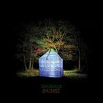

Top 50 Albums of 2009 (Part One)
By No Ripcord Staff
 42. Mastodon
42. Mastodon
“Crack The Skye”
(Reprise)
Original Review - Buy it from Insound
Stephen Hawking and Rasputin on a metal album? It’s possible that skulls, demons, Vikings and Satan are all a little played out these days, but Mastodon’s incorporation of out-of-body excursions, wormholes and Russia into one emotionally charged concept album seems too far reaching to be any good let alone as amazing as it actually happens to be. Crack The Skye, Mastodon’s fourth album, is a progressive wonder whose soul is never compromised for the sake of showmanship or overburdened by epic pretension. Songs like Oblivion and Quintessence provide enough passion and immediate gratification to properly set up the chaptered and lengthy The Czar, whose ten minutes seem to elapse as quickly as any three-minute pop standard. I don’t know if its ego, confidence or conceit that motivated Mastodon to create a concept album this ambitious, but the album’s heart purifies what might otherwise be considered a failed attempt at existential and self-indulgent posturing. (Sean Caldwell)
 38. Super Furry Animals
38. Super Furry Animals
 37. Jay Reatard
37. Jay Reatard
 36. The Field
36. The Field
 35. YACHT
35. YACHT
 34. Built To Spill
34. Built To Spill
 28. A Sunny Day In Glasgow
28. A Sunny Day In Glasgow
Is it me or has 2009 been passed over in the rush to celebrate the decade? It might not have been a vintage year, but as the following list comfortably illustrates, there was still plenty of great music to get excited about.
For those of you wondering where our "Best of Decade" list is, don't worry - we'll be addressing this in the new year when a sufficient amount of the dust has settled. You can expect to see some retrospective features, however, in the next few weeks.
Click here to skip directly to the top 25, if you must...
. . .
50. DOOM
“Born Like This”
(Lex)
Buy it from Insound
Born Like This would be a welcome ramshackle collection of cartoony beats and topsy turvy even if the villain hadn't decided to take five years off. As it stands, it is comforting to know that Doom will never stop shitting on super heroes (the homophobic, Batman-blasting Batty Boyz), singing gloriously off-key hooks (That's That) and generally acting like a character on a Saturday Morning cartoon. Rap is better with this syrup mouthed rhyme-sayer around. (Nate Adams)
49. Micachu and the Shapes
“Jewellery”
Micachu makes music for the moment. Part classical composer (she had a piece commissioned for the London Philharmonic) and part abstract musical savant specializing in her own unique brand of musical what-the-fuckery. It’s as far from a consistent album as they come, but that doesn’t stop it from being pretty damn good. I’ve never come across anything that sounds like this before, and it has the feeling of a flash in the pan album that some future prominent genius will cite as a huge influence in 20 years from now. Something this unique rarely gets passed by as this did in 2009, but, mark my words, it’s going to influence someone great someday. (Andrew Baer)
48. Bibio
“Ambivalence Avenue”
Warp was easily one of the great record labels of the decade, and often for signing bands that, on first impression, don’t seem to belong; such is the subtlety of Ambivalence Avenue. The British producer’s Warp debut begins with nifty vocal sample-based gems that J Dilla himself would be proud of. But just when you think you know where this record is going, you stumble upon the Simon and Garfunkelesque ballads Abrasion and The Palm of Your Wave. Ambitious, yet laid back and breezy is not an easy thing to pull off. (Alejandro Martinez)
47.Mountains
“Choral”
(Thrill Jockey)
Buy it from Insound
The whole of Choral is a masterpiece of quietly rapturous electro-acoustic sound, but there is one particular moment that bowls me over every time I throw the record on. Pardon the hyperbole (oh, how these year-end spiels rouse the giddy exaggerator from his den of ironic detachment!), but I think that Mountains deserve it: the acoustic guitar note at 11:40 of the opening track is perhaps the most powerful tone on any piece of music that I've heard all year. This is the heaviest note of 2009, Sunn0))) be damned! I'm not talking loud-heavy or bass-heavy but heart-heavy, heavy because the note so simply and beautifully places a clarifying coda on ten plus minutes of dizzying sonic immersion. This moment speaks volumes about what Anderegg and Holtkamp have accomplished on Choral, an ambient record that, like the best music of its kind, rewards both passive and active listening, that provides both space for wandering and wonders for gaping. (Tom Whalen)
Buy it from Insound
The whole of Choral is a masterpiece of quietly rapturous electro-acoustic sound, but there is one particular moment that bowls me over every time I throw the record on. Pardon the hyperbole (oh, how these year-end spiels rouse the giddy exaggerator from his den of ironic detachment!), but I think that Mountains deserve it: the acoustic guitar note at 11:40 of the opening track is perhaps the most powerful tone on any piece of music that I've heard all year. This is the heaviest note of 2009, Sunn0))) be damned! I'm not talking loud-heavy or bass-heavy but heart-heavy, heavy because the note so simply and beautifully places a clarifying coda on ten plus minutes of dizzying sonic immersion. This moment speaks volumes about what Anderegg and Holtkamp have accomplished on Choral, an ambient record that, like the best music of its kind, rewards both passive and active listening, that provides both space for wandering and wonders for gaping. (Tom Whalen)
46. Wavves
“Wavvves”
After Wavves mastermind Nathan Williams' much-publicized and now infamous breakdown in Barcelona, he became the poster child of the noise-pop movement and, as such, the subject of the most vehement denunciations and impassioned defenses of the genre. A lot of this criticism, though, didn't really address the album itself, and when it did, it often focused on Wavves' Dylan-esque approach of surrounding three-chord pop bliss with lengthy segments of tuneless drone. In all the uproar, most commentators glossed over the record's thematic content. If the graffitists of the May 1968 Paris Uprising advised us to "live without dead time", Wavvves is about living with nothing but it: without money, a car, a girlfriend, time, God, or friends (No Hope Kids). “Life’s a chore,” Williams declares on So Bored—the triumphant centerpiece of the year’s most deliciously bleak fuck-it pop record. (Michael Skinnider)
45. Various Artists
“Dark Was The Night”
Well, the names speak for themselves, don’t they? If you’ll excuse the clichéd expression, it is somewhat of an indie kid’s wet dream. From the opening piano tinkles of Knotty Pine the album is a fascinating and captivating journey through the works of some of the most prominent underground artists of the last decade. Some stars shine a little brighter than others but when the main focus is raising funds for a more than worthy cause it’s a little hard to be overly critical, and the very fact that this album exists is something in itself to be grateful for. (Daniel Dylan Wray)
44. Polvo
“In Prism”
Polvo returned from a 12 year silence this year with In Prism. Having disbanded in 1998, they reformed ten years later and went into the studio this year. There is always a worry that a reformed band will be a let down, and many are. Polvo, fortunately, sound better than ever - the songs are tight, imaginitive and addictive; the production is clean and heavy, which suits them down to the ground. The quieter, more brooding songs are just as welcome here as the muscle of the harder ones, and they certainly prove that they can still write great melodies. Not always a band known for their brevity, only one song out of eight here is under five minutes. Despite this, they still retain our attentiveness, and have surely made one of the best records of their career. From this point on, things are surely looking good for Polvo's renaissance. (Neil Insh)
43. Rural Alberta Advantage
“Hometowns”
Rural Alberta Advantage's Hometowns extracts the qualities of Saddle Creek's best bands. Their earthy, warm and skittish tendencies are instantly familiar and appealing. Hometowns is also the proof that interesting Canadian indie doesn't have to be Spencer Krug related. On Don't Haunt this Place and Frank, AB the energy bristles, the drumming is taut and Nils Edenloff gets the most out of his Mangum/Corgan whine. The sentimentality transcends the syrupy tendencies inherent in the concepts of "home," "heart" and the linkage between the two. Edenloff likes to reflect on those he misses and does it by releasing all of the air in his lungs. As precise as the lively instrumentation is, it never becomes commonplace. The performances are held together by one carefully placed linchpin that jostles achingly with each bump in the road. (Brett Oronzio)
42. Mastodon“Crack The Skye”
(Reprise)
Original Review - Buy it from Insound
Stephen Hawking and Rasputin on a metal album? It’s possible that skulls, demons, Vikings and Satan are all a little played out these days, but Mastodon’s incorporation of out-of-body excursions, wormholes and Russia into one emotionally charged concept album seems too far reaching to be any good let alone as amazing as it actually happens to be. Crack The Skye, Mastodon’s fourth album, is a progressive wonder whose soul is never compromised for the sake of showmanship or overburdened by epic pretension. Songs like Oblivion and Quintessence provide enough passion and immediate gratification to properly set up the chaptered and lengthy The Czar, whose ten minutes seem to elapse as quickly as any three-minute pop standard. I don’t know if its ego, confidence or conceit that motivated Mastodon to create a concept album this ambitious, but the album’s heart purifies what might otherwise be considered a failed attempt at existential and self-indulgent posturing. (Sean Caldwell)
41. Arctic Monkeys
“Humbug”
Arctic Monkeys have an uneasy relationship with hype. 2009 saw the release of Humbug, their 3rd studio album, and expectations were high, with the announcement that Josh Homme would be producing. The collaboration undoubtedly had an effect on the Monkeys’ trademark sound: first single, Crying Lightning, slurs along in shades much darker than we’ve seen the band wear before. But there’s whimsical relief in Cornerstone, and moments like Pretty Visitors wherein the old Monkeys are blatantly evident. Commercially, Humbug failed to appease the hype-machine that characteristically follows the Monkeys, but the album explores new territory and, if these explorations are not always a comfortable fit for the band, they give us hope that the Arctic Monkeys will have an even more successful decade come 2010. (Paul Fowler)
40. Them Crooked Vultures
“Them Crooked Vultures”
(Interscope)
Buy it from Insound
Queens of the Stone Age singer/guitarist, Josh Homme, decided to make an album with ex-Zeppelin bassist John Paul Jones and Foo Fighter, Dave Grohl.
Why? Who cares?
Them Crooked Vultures, and their debut album of the same name, carries Homme’s distinctive style while incorporating more 70s arena rock nostalgia and less of his anti-Pop conviction. And though some of these songs could’ve wound up a digit on any QOTSA album, (Warsaw or the First Breath You Take After You Give Up could easily have been a B-side from Lullabies to Paralyze), the album’s prog-like twists and rhythmic hold are a lot of fun. As unnecessary as they seem, and probably are, Them Crooked Vultures is a super combo demonstrative of the sort of spirit that seems extraordinarily lacking in rock music these days. (Sean Caldwell)
(Interscope)
Buy it from Insound
Queens of the Stone Age singer/guitarist, Josh Homme, decided to make an album with ex-Zeppelin bassist John Paul Jones and Foo Fighter, Dave Grohl.
Why? Who cares?
Them Crooked Vultures, and their debut album of the same name, carries Homme’s distinctive style while incorporating more 70s arena rock nostalgia and less of his anti-Pop conviction. And though some of these songs could’ve wound up a digit on any QOTSA album, (Warsaw or the First Breath You Take After You Give Up could easily have been a B-side from Lullabies to Paralyze), the album’s prog-like twists and rhythmic hold are a lot of fun. As unnecessary as they seem, and probably are, Them Crooked Vultures is a super combo demonstrative of the sort of spirit that seems extraordinarily lacking in rock music these days. (Sean Caldwell)
39. The Decemberists
“The Hazards of Love”
In the age of the single-track download and the iPod Shuffle, releasing a 17-track gapless album is somewhat ambitious. Decemberists’ songs have often been stories in miniature, but The Hazards of Love is a sprawling novel of a record taking in revenge (The Wanting Comes in Waves/Repaid), filicide (The Rake’s Song) and regret (The Hazards of Love 4 (The Drowned)). Sound all a bit too worthy? Not one bit; The Decemberists shatter any preconceptions with crunching guitars, delicate passages and recurring riffs which are repeated throughout the album. Packing more action than the average Hollywood blockbuster into less than an hour, The Hazards of Love will make you glad to have ears. (Joe Rivers)
38. Super Furry Animals “Dark Days/Light Years”
Welsh rockers Super Furry Animals once again evolve with Dark Days/Light Years, the final peak to stamp them as one of the most versatile acts of the decade. Ever since they started to dig through psychedelic experiments and even trying the conceptual pop album, Dark Days/Light Years is symbolic for letting loose. Not since Rings Around the World had they sounded so assured of themselves, blending groovy rock songs and funkified riffs with a whole lot of soul. This is Gruff Rhys and company at the top of their game, transporting us into an assortment of sounds that are instantly attention grabbing but revealing with repeated listens. The seventies may be long gone, but Dark Days/Light Years sure sounds like that great lost album that never came into fruition because it could only be accomplished in our modern age. (Juan Edgardo Rodriguez)
37. Jay Reatard“Watch Me Fall”
The glut of fuzzy low-fi bands to come and go in the last few years have made Jay Reatard sound that much better. Watch Me Fall is another collection of quick angular garage punk from a veteran of recording and writing songs on a budget. It’s comforting to know that, regardless of what the passing mescal fancy may be, dudes like Reatard will always be writing dirty blast of well-crafted snot pop. Rock on, you grimy motherfucker. (Nate Adams)
36. The Field“Yesterday and Today”
If the From Here We Go Sublime was the surprising introduction to Axel Willner’s distorted take on high brow techno minimalism then Yesterday and Today was an unexpected development. It would have been all too easy, and in some ways satisfying, to simply reproduce the glacial epics that captured our imagination so well but instead Yesterday and Today took some real risks, throwing in live instrumentation, less tracks, and even a cover of a song already famously covered by Beck. If it didn’t grab you immediately, then it did later on when you realized that this collection was just as moving, as complex, and as downright exciting as what had come before it. (Nick Fenn)
35. YACHT“See Mystery Lights”
A friend of mine, describing Portland electronic duo YACHT's See Mystery Lights, compared it to "a pamphlet for a cult... but a really well designed pamphlet—one that would make you kind of want to join the cult." It's an oddly appropriate non-sequitur, given YACHT's propensity for cultish examinations of happiness, religion and death. Opener Ring the Bell features lines like "Will we go to heaven or will we go to hell? / It's my understanding that neither are real", but track 2, The Afterlife, declares, "Death is not the end of the song." In the mouths of a more sincere band, it would sound like pop psychology, but YACHT’s insincere examinations of everything from hedonism to illegal downloading to suburban ennui are precisely what redeem them. It would be flippant hipster irony if it didn't fit the music so well: every song on See Mystery Lights contrasts with the one before it, both lyrically and musically (Summer Song is a bass-heavy dirge, while I'm In Love with a Ripper is pop Auto-Tuned to an immoderate level). Like DFA labelmate LCD Soundsystem, to whom Summer Song is an unabashed homage, YACHT precisely fits Stravinsky's description of the musical ideal: "music spontaneous and 'useless', music that wishes to express nothing." The funny thing is, See Mystery Lights does this better than James Murphy ever did. (Michael Skinnider)
34. Built To Spill“There Is No Enemy”
We’ll never have the brilliance of the band’s early days back again. It’s gone and it’s never coming back. But, this new release isn’t half-bad. Their sonic history courses through the album’s veins and the band feels once again alive, just not very fresh. While we sit here wishing for that next sublime Built To Spill album, There Is No Enemy serves as a good fix to hold us on over. (Preston Bernstein)
33. Antony And The Johnsons
“The Crying Light”
Still striking, Antony Hegarty’s voice pours forth immediately on The Crying Light and, without delay, the Antony enthusiast feels at home. This is not to say that this album is retreading any steps – Hegarty continues to mature. Those attuned to his music will notice a more reserved, understated quality to The Crying Light that was traded for bombast on I Am A Bird Now. In Hegarty’s own words, this is an album ‘about landscape and the future’, wherein the identity politics explored in previous albums are skilfully connected to the plight of the environmentalist. Regardless of topic, however, The Crying Light achieves its resonance because Hegarty’s is a unique and timeless voice: a trembling, evocative emanation that remains moving without ever feeling manipulative or lugubrious. (Paul Fowler)
32. Fiery Furnaces
“I’m Going Away”
Even with the Fiery Furnaces most accessible record since their debut, there's still the feeling that the whole thing might go careening off the rails at any moment. The pent up adrenaline in Charmaine Champagne is edgy while The End is Near is the closest the band will ever get to pop
radio, until that guitar line screeches in at least. Eleanor Friedberger's Seussian rhymes are at their finest with subjects that always border on darkness and imminent danger, but never cross over into it. When comparing the Furnaces priors with I'm Going Away it would seem that either all of the their ideas up to now have been drawn out with filler, or they've finally learned how to edit themselves, making these songs simply truncated versions of vaster visions. Even if this is the case, Even in the Rain and Keep me in the Dark wind up being their catchiest yet, and never feel like they are being shoehorned into four-minute frames. (Brett Oronzio)
31. Atlas Sound
“Logos”
The cover art kind of says it all: Bradford Cox bares it all. I admit I completely dismissed this record on first impression, but this is one of those proverbial growers. The math is simple on this one: Cox’s most subtle, confident songs + Stereolab's Laetitia Sadier + Noah Lennox = Bliss. Incidentally, along with Animal Collective, Cox is easily one of the most talented, prolific artists of the second half of the decade. This record will be worn out over the long, brutal Winter ahead. (Alejandro Martinez)
30. Cymbals Eat Guitars
“Why There Are Mountains”
Sometimes, a classic band structure is much appreciated. These days, when the basis of so many artists is to innovate, they forget the core basics of writing a solid rock song. Cymbals Eat Guitars don’t believe that innovation is a means to impress. Instead, they opt on rocking out with precision, borrowing from their influences and sculpting their own interpretation. Hardly a jam band, they do take their time to layer their complex compositions, but the results are mostly rewarding and always unpredictable. Why There Are Mountains is full of big ideas and grandiose statements, but with such a skilful approach, it never falters. When a band so young is playing surprisingly articulate guitar pop with such ease, you’d believe that they were already halfway into their career. (Juan Edgardo Rodriguez)
29. Mos Def
“The Ecstatic”
With a United Nations-worth of internationally flavored beats, Mos Def dropped his forth solo effort, a mellow masterpiece of socially conscious alternative hip-hop and one of the year’s biggest surprises; and the album remains true to the joy its title suggests despite the prevailing themes of political, social, and economic unrest.
DJ Preservation’s production on Quiet Dog is so stripped down that it makes the synth and string-driven boom-bap of Life in Marvelous Times even more of an explosion. Mos Def, back at the top of his lyrical game, raps about “revelations, hatred, love, and war / and more, and more, and more, and more / and more of less than ever before. / It’s just too much more for your mind to absorb,” and declares, “It’s scary like hell, but there’s no doubt / we can’t be alive in no time but now,” punctuating “now” as he would a call to action. As he continually points out in his tunes and talk show appearances, these are troubled times, but his effervescence makes them a bit more bearable. (Ryan Faughnder)
28. A Sunny Day In Glasgow“Ashes Grammar”
Is there a concept behind Ashes Grammar? Probably not, although, maybe the band members have kept things deliberately cryptic. With all it’s sparse lyricism and curiously peculiar song titling, it becomes a little hard to pin down. There definitely wasn’t any restraint in the making of Ashes Grammar, since it sounds more like a full blown, atmospheric collage of intangible sounds than a defined, conceptual piece. The little mood pieces that set the longer tracks are amusing at best, but that’s about as much cohesiveness as you’ll find. At times I found myself nostalgic for the clear-cut and impeccably arranged sequencing in Scribble Music Comic Journal. Even if Ashes Grammar drifts quite nicely as a whole – best listened to it with eyes closed in a meditative position – it seems most appropriate for the short attention span generation. In their short yet complex career, A Sunny Day in Glasgow have found enough leverage to embrace their individuality. (Juan Edgardo Rodriguez)
27. The Antlers
“Hospice”
This is 2009’s answer to Third. An album that’s starkly beautiful, intimate, soul bearing and so fucking depressing it becomes nearly unlistenable after playing it ten times a week for the first month you own it. And beautiful it is. It has elements of a great indie rock record (Two), an ambient record (Atrophy), and successfully combines the sounds of both on several tracks. It’s a crushingly realistic account of a deeply personal story, something everyone can, at least on some level, relate to. You can hear the sadness and utter loss of direction in every note of the album, and the result is nothing less than fantastic. (Andrew Baer)
26. Dan Deacon
“Bromst”
Combining everything from the elegant soundtracks of Phillip Glass to punk and analog electronica, Dan Deacon has been one of the most original musicians of the decade. Anyone that’s ever attended one of his live performances can attest to the fact that the man gets off on making his audience, well –get off. Bromst, I think, is Deacon’s attempt to make a live album in the studio. The strange thing is, it kind of works. The songs are bombastic, anthemic, and are best played loudly on speakers. (Alejandro Martinez)
. . .
Click here to read part two of this feature (albums #25 to #1)
20 December, 2009 - 21:46 — No Ripcord Staff